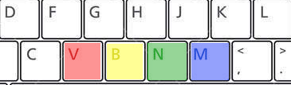

<!DOCTYPE html>
<html>
  <head>

    <meta charset="UTF-8">
    <meta name="description" content="jsPsych Cognitive task">
    <meta name="keywords" content="HTML, CSS, JavaScript">
    <meta name="author" content="Jason Steffener, NCMLab">
    <meta name="viewport" content="width=device-width, initial-scale=1.0">
    <title>NCM Lab: Stroop</title>
    <script src="../jspsych-6.2.0/jspsych.js"></script>
    <script src="../jspsych-6.2.0/plugins/jspsych-html-keyboard-response.js"></script>
    <script src="../jspsych-6.2.0/plugins/jspsych-image-keyboard-response.js"></script>
    <link href="../jspsych-6.2.0/css/jspsych.css" rel="stylesheet" type="text/css">
  </head>
  <body></body>
  <script>
	/*<?php
		$post_data = json_decode(file_get_contents('php://input'), true); 
		// the directory "data" must be writable by the server
		$name = "data/".$post_data['filename'].".csv"; 
		$data = $post_data['filedata'];
		// write the file to disk
		file_put_contents($name, $data);
		?>*/

  	    /* create timeline */

    var timeline = [];

    /* define welcome message trial */
    var welcome = {
      type: "html-keyboard-response",
      stimulus: "Welcome to the Stroop experiment. Press any key to begin. "
    };
    var Instructions = {
      type: "html-keyboard-response",
      stimulus :"<p>Instructions</p>Press the Escape key to end the experiment."
    }

    var KeyboardFigure = {
      type: 'image-keyboad-reponse',
      stimulus: 'StroopColorsKeyboard.png'
    }

    /* define thank you trial */
    var thank_you = {
    	type: "html-keyboard-response",
    	stimulus: "Thank you for participanting. Press any key to end."
    };

    var test_stimuli = [
      { stimulus: '<div style="font-size:60px;"> RED </div><p><p>', data: {test_part: 'trial',  correct_response: 'v' } },
      { stimulus: '<div style="font-size:60px;"> YELLOW </div><p><p>', data: {test_part: 'trial',  correct_response: 'b' } },
      { stimulus: '<div style="font-size:60px;"> GREEN </div><p><p>', data: {test_part: 'trial',  correct_response: 'n' } },
      { stimulus: '<div style="font-size:60px;"> BLUE </div><p><p>', data: {test_part: 'trial',  correct_response: 'm' } },
    
    ];

	var fixation = {
	  type: 'html-keyboard-response',
	  stimulus: '<div style="font-size:60px;">+</div><p><p>',
	  choices: jsPsych.NO_KEYS,
	  trial_duration: function(){
        return jsPsych.randomization.sampleWithoutReplacement([250, 500, 750, 1000, 1250, 1500, 1750, 2000], 1)[0];
      },
    data: {test_part: 'fixation'}
	}
/* ARROWS 37 = left, 38 = up, 39 = right, 40 = down */
/* Escape = 27 */ 
    var test = {
      type: "html-keyboard-response",
      stimulus: [jsPsych.timelineVariable('stimulus')],
      /* The N is the escape key which will end this experiment */
      choices: ['v','b','n','m',27],
      data: jsPsych.timelineVariable('data'),
      on_finish: function(data){
        data.correct = data.key_press == jsPsych.pluginAPI.convertKeyCharacterToKeyCode(data.correct_response);
        /* If the N key is pressed the current timeline is ended and the thank you screen is shown */
        if (data.key_press == 27) {
          jsPsych.endCurrentTimeline();
        }
      },
    }

    var feedback = {
      type: 'html-keyboard-response',
      trial_duration: 400,
      stimulus: function(){
        var last_trial_correct = jsPsych.data.get().last(1).values()[0].correct;
        if(last_trial_correct){
          return '<div style="font-size:30px;">Correct!</div><p><p>';
        } else {
          return '<div style="font-size:30px;">Wrong</div><p><p>'
        }
      }
    }
  
    var test_procedure = {
      timeline: [fixation, test, feedback],
      timeline_variables: test_stimuli,
      sample: {
        type: 'fixed-repetitions',
        size: 4, 
    	}
    }


	timeline.push(welcome);
  timeline.push(Instructions);
	timeline.push(test_procedure, feedback);
	timeline.push(thank_you);
    /* start the experiment */
    jsPsych.init({
      	timeline: timeline,
        /* this adds a fixed amount of time between every trial on the screen
        this is between fixation and the start of a trial and between that trial and the next fixation
        */
        default_iti: 0,
		on_finish: function() {
        	//jsPsych.data.get().localSave('csv','mydata.csv');
        	jsPsych.data.displayData();
      	}
      });
    
  </script>
</html>